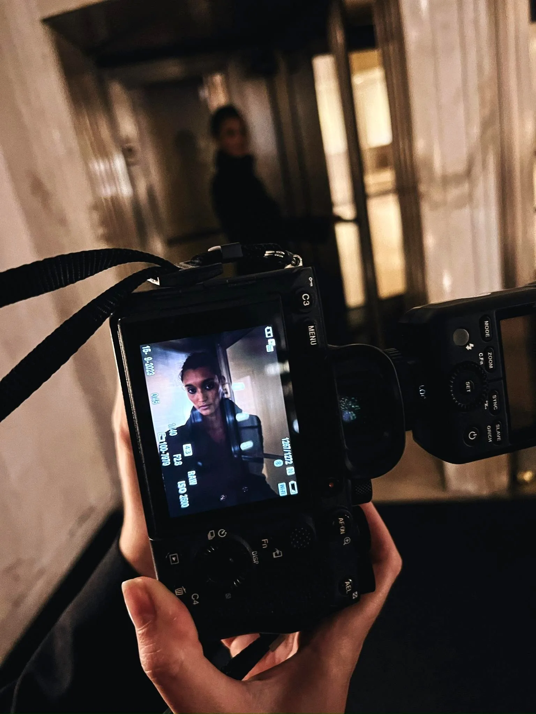
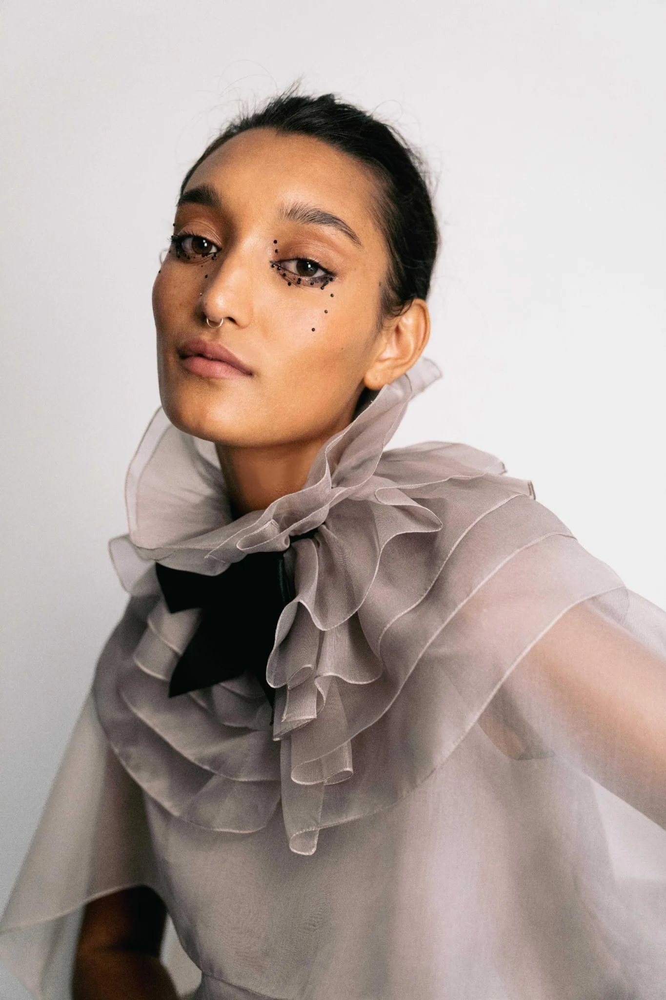
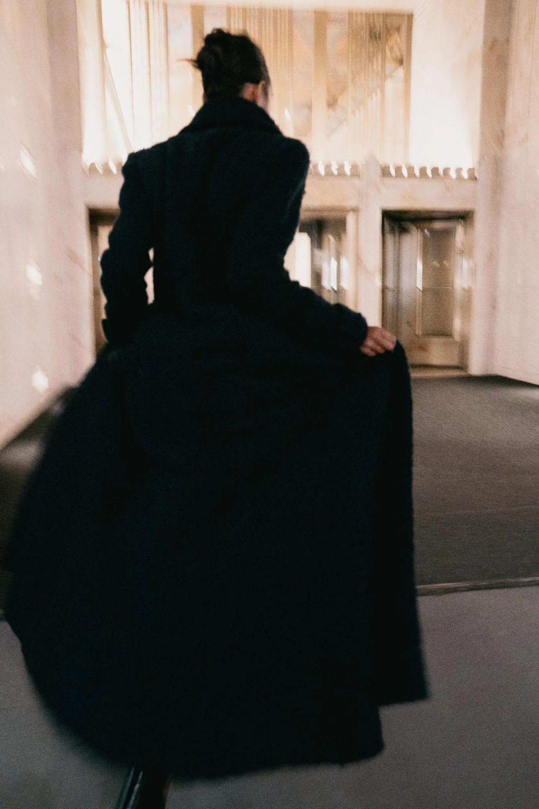
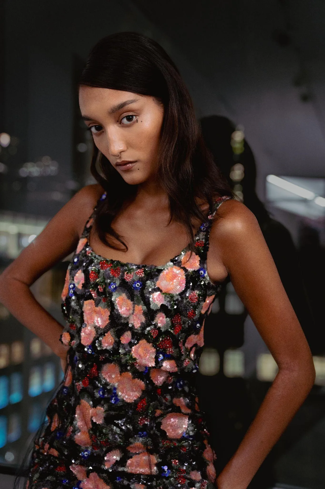
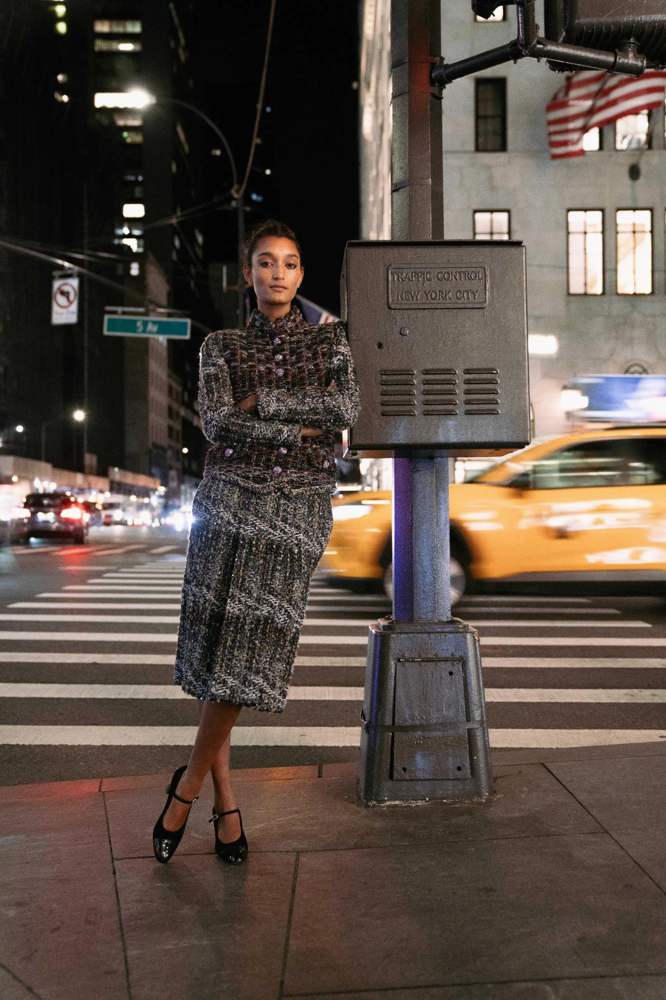
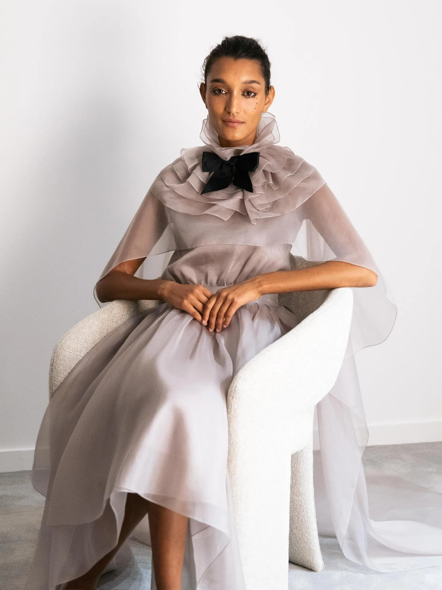

Dirección Creativa — Editorial — Nueva York
Chanel Haute Couture
× Marie Claire Argentina
Nueva York, 2021–2024
Marie Claire Argentina
Cuatro tapas
Producir Haute Couture de Chanel para tapa no es un encargo que llega por mail. Es una relación que se construyó durante años, producción a producción, con Marie Claire Argentina.

Hay producciones en las que el acceso a la pieza es un obstáculo logístico. Con Chanel Haute Couture sucede al revés: el desafío es estar a la altura de lo que tenés en las manos.
Cuatro editoriales distintas, cuatro momentos distintos, la misma premisa: mostrar Haute Couture en Nueva York sin que parezca publicidad institucional. Que se vea real, que se vea viva.

Cada locación que elegimos tenía que tener una razón: el contraste entre la arquitectura de la ciudad y las piezas de alta costura dice algo que un estudio no puede decir.
Una esquina de Manhattan a las dos de la mañana con un vestido de lentejuelas Chanel: eso es la imagen. El resto es técnica.




La primera vez que Marie Claire Argentina publicó Chanel Haute Couture en tapa, nadie sabía si iba a funcionar para el mercado local. Funcionó. Volvimos tres veces más.
Lo que construís con consistencia no se puede replicar en una producción aislada.
Créditos